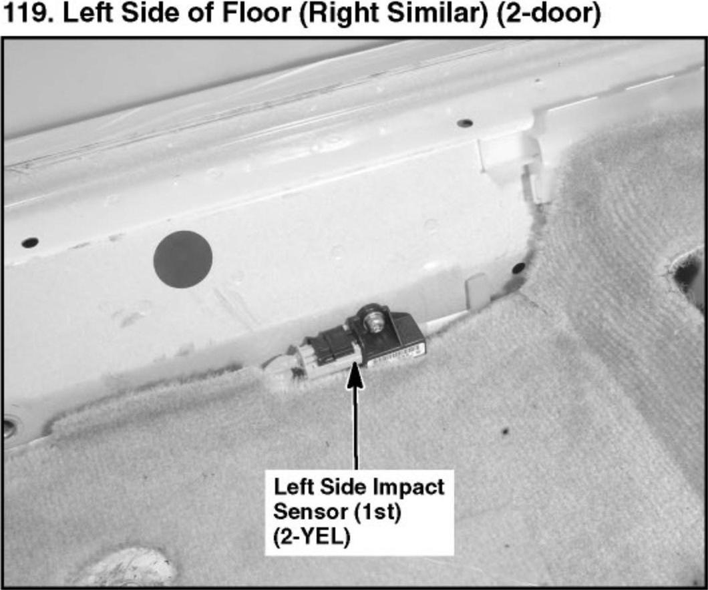
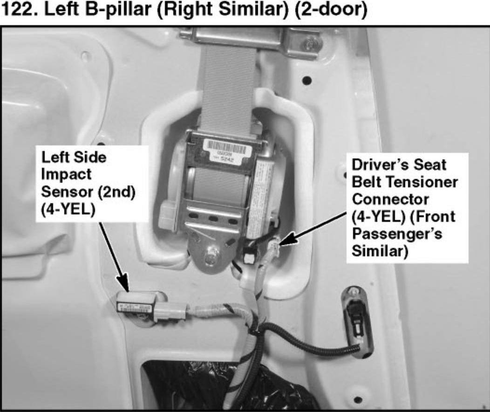
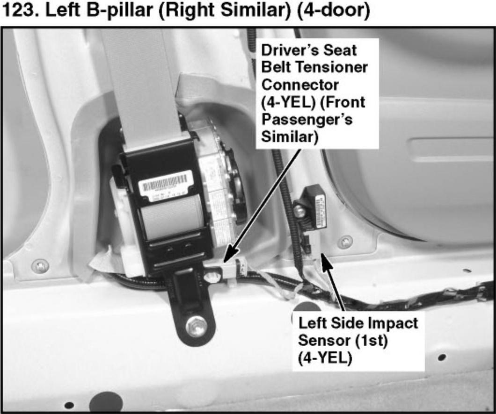
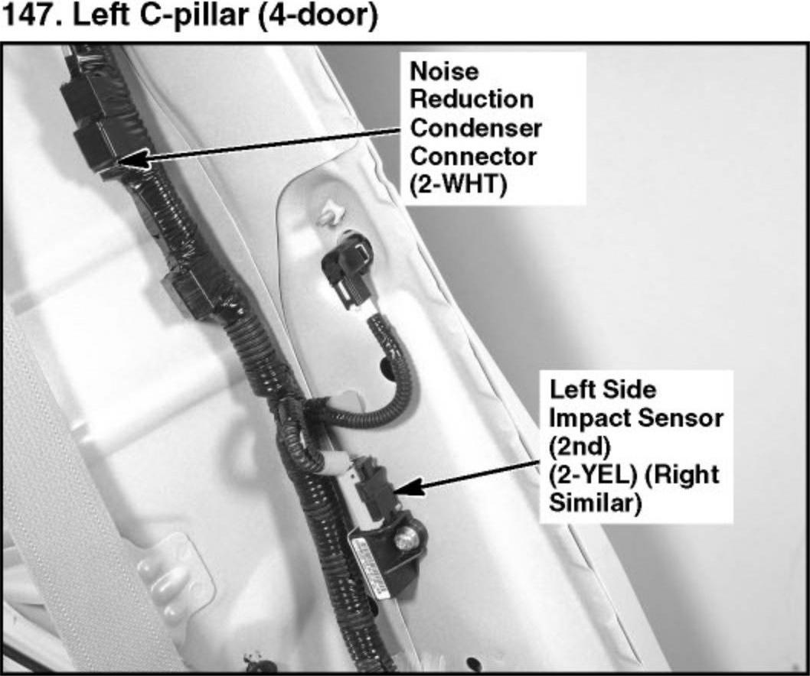
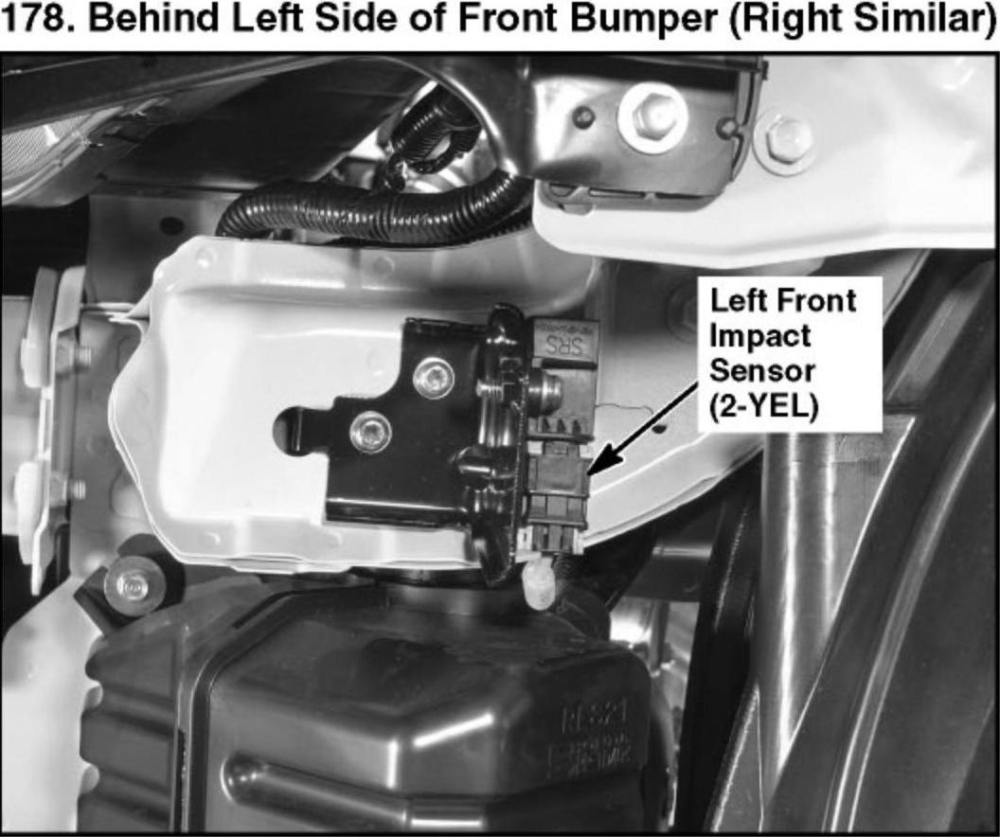
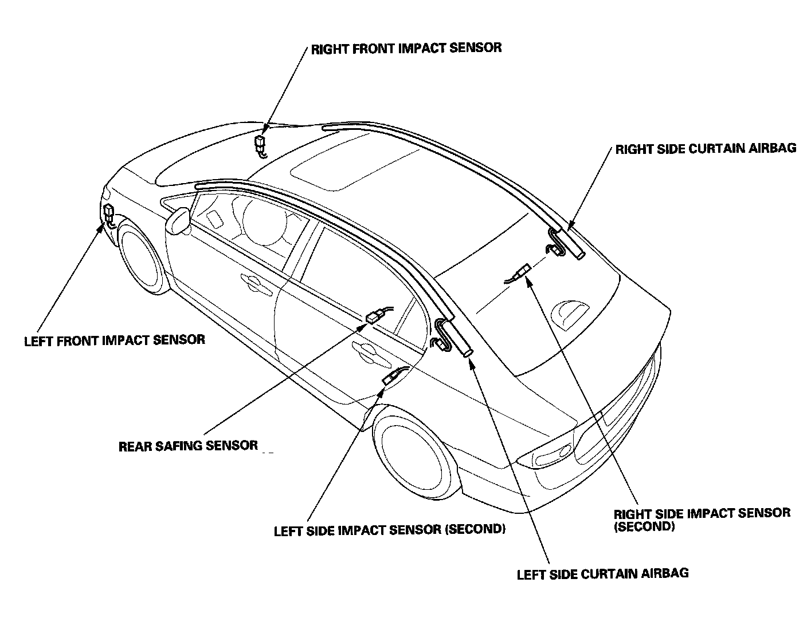
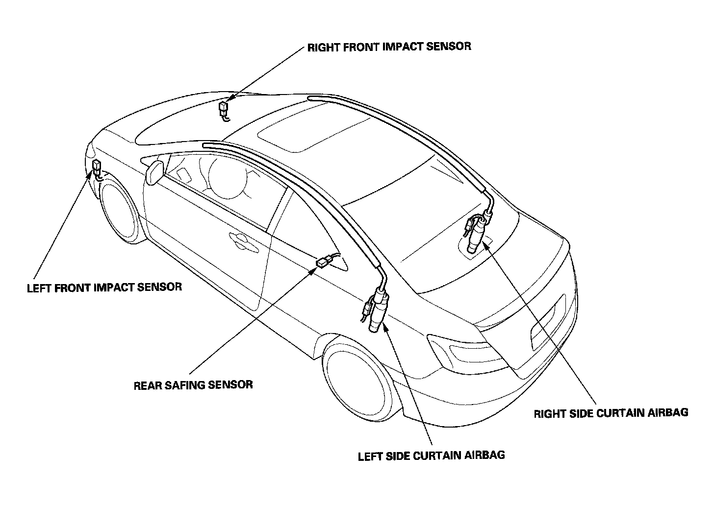

Impact Sensor: Locations
119. Left Side of Floor (Right Similar) (2-door):

122. Left B-pillar (Right Similar) (2-door):

123. Left B-pillar (Right Similar) (4-door):

147. Left C-pillar (4-door):

178. Behind Left Side of Front Bumper (Right Similar):

SRS Component Location Index:

SRS Component Location Index:

SRS Component Location Index:

SRS Component Location Index:
